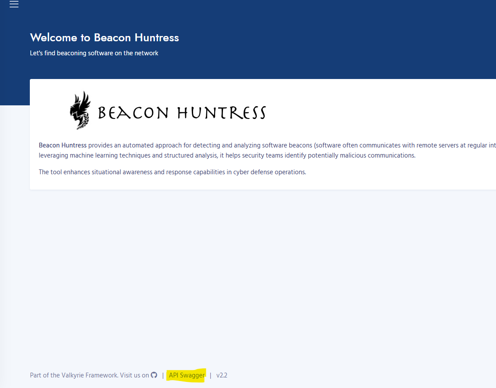
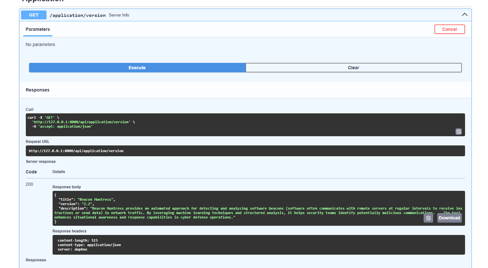

Beacon Huntress API¶
API has been added for
- API
- Application
- Searches
- Results
- Interactive API Docs
- Coding Example
Application¶
Version¶
Beacon Huntress version
- Return Values
- title: Application title
- version: Beacon Huntress version number
- description: Beacon Huntress description
- Example Code
import requests url = "http://127.0.0.1:8000/api/application/version" response = requests.get(url) val = response.json() print(val)
Configuration¶
Beacon Huntress configuration
- Return Values
- Beacon Huntress Configuration: Beacon Huntress Configuration
- Example Code
import requests url = "http://127.0.0.1:8000/api/application/configuration" response = requests.get(url) val = response.json() print(val)
Searches¶
Quick Cluster¶
Run Beacon Huntress quick cluster search.
- Input Values
- log_type: Log Type parameter (Zeek Connection = conn)
- log_dir: Log directory location
- delta: Average callback time in minutes
- call_back: The minimum number of connection callbacks
- percent: The minimum percentage of cluster points
- span_avg: The percentage for the span of EPS
- variance: The maximum percentage of jitter that is allowed
- start_dte: The start date time
- end_dte: The end date time
- zip: Is the file a zip file (True or False)
- verbose: Verbose logging (True of False)
- Return Values
- beacon_group: Beacon Huntress run results group
- cnt: Number of potential beacons
- log_file: Beacon Huntress run results log file
- Example Code
import requests import json url = "http://127.0.0.1:8000/api/searches/quick_cluster" payload = { "log_type": "conn", "log_dir": "/tutorial", "delta": 20, "call_back": 10, "percent": 85, "span_avg": 12, "variance": 15, "start_dte": "", "end_dte": "", "zip": False, "verbose": False } payload = json.dumps(payload) response = requests.post(url, data=payload) val = response.json() print(val)
Detail Cluster¶
Beacon Huntress detailed cluster search.
- Input Values
- log_type: Log Type parameter (Zeek Connection = conn)
- log_dir: Log directory location
- delta: Average callback time in minutes
- call_back: The minimum number of connection callbacks
- percent: The minimum percentage of cluster points
- spans: The time spans to search in list form (e.g [[0, 5], [2, 15], [15, 35], [30, 60]])
- variance: The maximum percentage of jitter that is allowed
- start_dte: The start date time
- end_dte: The end date time
- zip: Is the file a zip file (True or False)
- verbose: Verbose logging (True of False)
- Return Values
- beacon_group: Beacon Huntress run results group
- cnt: Number of potential beacons
- log_file: Beacon Huntress run results log file
- Example Code
import requests import json url = "http://127.0.0.1:8000/api/searches/detailed_cluster" payload = { "log_type": "conn", "log_dir": "/tutorial", "delta": 20, "time_spans": [ [0,5], [2,15], [15,35], [30,60] ], "call_back": 10, "percent": 85, "start_dte": "", "end_dte": "", "zip": False, "verbose": False } payload = json.dumps(payload) # Run Quick Cluster Search response = requests.post(url, data=payload) val = response.json() print(val)
Hierarchical¶
Beacon Huntress hierarchical search.
- Input Values
- log_type: Log Type parameter (Zeek Connection = conn)
- log_dir: Log directory location
- delta: Average callback time in minutes
- line_amounts: The amount of lines to process (e.g. [1])
- call_back: The minimum number of connection callbacks
- variance: The maximum percentage of jitter that is allowed
- percent: The minimum percentage of cluster points
- start_dte: The start date time
- end_dte: The end date time
- zip: Is the file a zip file (True or False)
- verbose: Verbose logging (True of False)
- Return Values
- beacon_group: Beacon Huntress run results group
- cnt: Number of potential beacons
- log_file: Beacon Huntress run results log file
- Example Code
import requests import json url = "http://127.0.0.1:8000/api/searches/hierarchical" payload = { "log_type": "conn", "log_dir": "/tutorial", "delta": 20, "line_amounts": [ 1 ], "call_back": 10, "variance": 15, "percent": 85, "start_dte": "", "end_dte": "", "zip": False, "verbose": False } payload = json.dumps(payload) # Run Quick Cluster Search response = requests.post(url, data=payload) val = response.json() print(val)
Results¶
Beacon Groups¶
Get Beacon Huntress search groups.
- Return Values
- beacon_group: Results group_id to be used for /beacon_groups
- date: Date of search
- beacon_count: Number of potential beacons
- log_file: Results log_file name to used for get_log_file
- Example Code
import requests url = "http://127.0.0.1:8000/api/results/beacon_groups" response = requests.get(url) val = response.json() print(val)
Beacon Results¶
Get or Delete Beacon Results
- Input Values
- beacon_group: Beacon Group UUID
- Return Values
- ID: Unique row identifier
- Source IP: Source IP address
- Destination IP: Destination IP address
- Port: Destination Port ID
- Score: Clustered score
- DNS: DNS name
- Connection Count: Number of connection for each unique Source IP, Destination IP and Port.
- First Occurrence: Minimum date for each unique Source IP, Destination IP and Port.
- Last Occurrence: Maximum date for each unique Source IP, Destination IP and Port.
- Example Code
import requests url = "http://127.0.0.1:8000/api/results/beacon_results" # Get Results response = requests.get(url, params={"beacon_group": "9a42fb53-ceac-44b2-afae-d89d133679e2"}) # Delete Results #response = requests.delete(url, params={"beacon_group": "9a42fb53-ceac-44b2-afae-d89d133679e2"}) val = response.json() print(val)
Top Talkers¶
Get Beacon Huntress Top Talkers
- Input Values
- beacon_group: Beacon Group UUID
- Return Values
- ID: Unique row identifier
- Source IP: Source IP address
- Destination IP: Destination IP address
- Port: Destination Port ID
- Total Number of Connections: Total number of connect for each unique Source IP, Destination IP and Port.
- Example Code
import requests url = "http://127.0.0.1:8000/api/results/top_talkers" # Get Top Talkers response = requests.get(url, params={"beacon_group": "9a42fb53-ceac-44b2-afae-d89d133679e2"}) val = response.json() print(val)
Log File¶
Get or Delete Log File
- Input Values
- log_file: Beacon run log file
- Return Values
- file_content: Log file content
- Example Code
import requests url = "http://127.0.0.1:8000/api/results/log_file" # Get Log File response = requests.get(url, params={"log_file": "log_1752679403"}) # Delete Log File #response = requests.delete(url, params={"log_file": "log_1752679403"}) val = response.json() print(val)
Filter Beacon¶
Get, Add or Delete Filtered Hosts
- Input Values (Add or Delete)
- ip: IP to filter
- Return Values
- Add
- Filtered: Boolean
- Message: Short description
- Deleted
- Deleted: Boolean
- Message: Short description
- Get
- IP: Filter host IP
- DNS: Dns name
- Description: Description for filtered host
- Filtered_Date: Date of filtered host
- Add
- Example Code
import requests url = "http://127.0.0.1:8000/api/results/filter_host" # Get Filtered Host response = requests.get(url) # Add Filtered Host #response = requests.post(url, params={"ip": "2.17.188.84"}) # Delete Filtered Host #response = requests.delete(url, params={"ip": "2.17.188.84"}) print(response.text)
Interactive API Docs¶
- To access the interactive API docs click on the API Swagger link at the bottom of the page

- From the docs page you can run any of the api by expanding the requst, clicking the Try it out button, then the execute button and if successful you will receive a response body.

Coding Example¶
Below is an example of running a beacon searching using the API.
Run a Beacon Search¶
Quick cluster search with the tutorial data.
import requests
import json
url = "http://127.0.0.1:8000/api/searches/quick_cluster"
payload = {
"log_type": "conn",
"log_dir": "/tutorial",
"delta": 20,
"call_back": 10,
"percent": 85,
"span_avg": 12,
"variance": 15,
"start_dte": "",
"end_dte": "",
"zip": False,
"verbose": False
}
payload = json.dumps(payload)
# Run Quick Cluster Search
response = requests.post(url, data=payload)
val = response.json()
# Get Results
url = "http://127.0.0.1:8000/api/results/beacon_results"
response = requests.get(url,params={"beacon_group": val["beacon_group"]})
print(val["beacon_group"])
print(response.text)